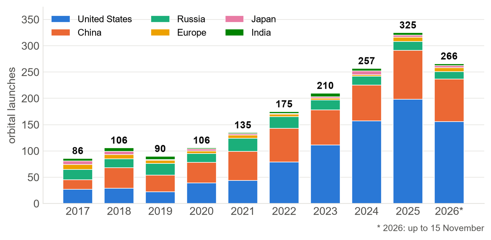
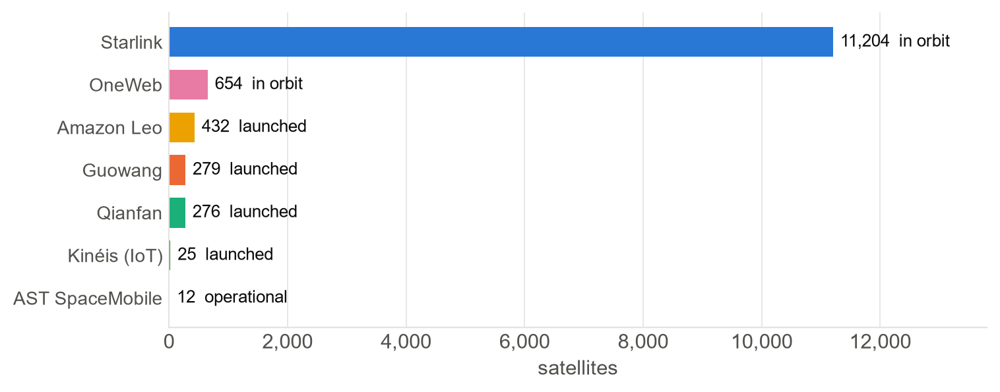
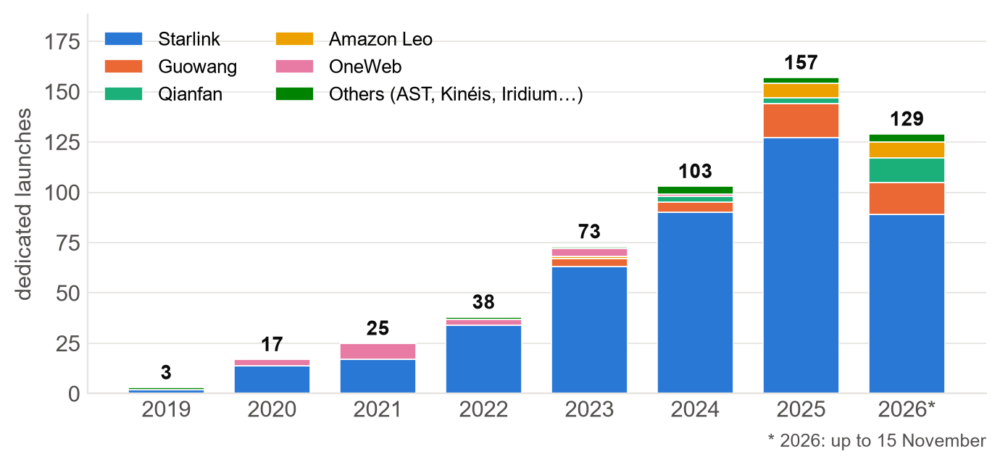
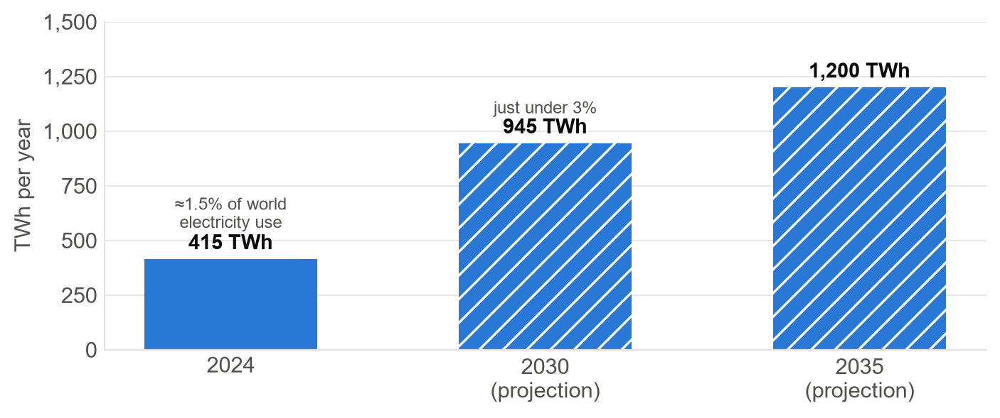
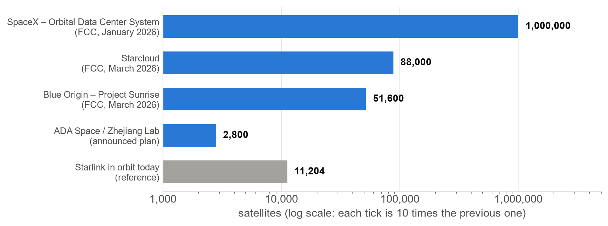
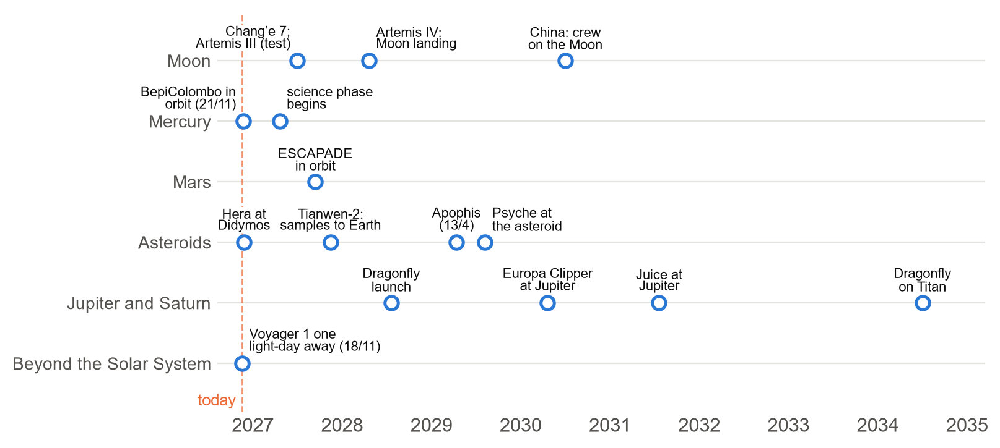

Space at the end of 2026: launchers, constellations, orbital data centres and missions
- launchers
- SpaceX
- satellite constellations
- Europe
- orbital data centres
- exploration
- open data
2026 is the year space became infrastructure: launches have passed 300 a year, low Earth orbit constellations count tens of thousands of satellites, data centres in orbit are being designed, and a space company, SpaceX, has made the largest stock market listing in history.
This page brings together a summary of four in-depth studies carried out in 2025–2026 and updated to November 2026 with a database of orbital launches built from open sources. There are four questions:
- Launchers: who goes to space, with which rockets, at what pace?
- Constellations: who controls low Earth orbit, and what room is left for Europe?
- Data centres: does it make sense to move computing for artificial intelligence into orbit?
- Missions: where does the exploration of the Moon and the Solar System stand?
Launch data are updated to 25 November 2026.
1. Background
For sixty years space was a matter for States: a few launches a year, expendable rockets, costly and rare missions. In less than ten years the picture has been turned upside down. Rocket reuse has slashed the cost of reaching orbit, and private companies have become their own main customers: those who build launchers put their own constellations into orbit, and those who run constellations buy launchers.
Three consequences run through the whole page:
- Concentration: a single operator, SpaceX, carries out more than half of all launches worldwide and runs about two in three active satellites.
- Competition between powers: China is growing with dozens of different rockets and two national mega-constellations; Europe has excellent skills but limited scale and launch cadence.
- New uses: after communications and Earth observation, orbit is becoming a possible home for artificial intelligence computing, powered by the Sun.
Scientific exploration continues in parallel, with a 2026 full of milestones: a crew around the Moon again, BepiColombo arriving at Mercury, Voyager 1 one light-day from Earth.
Back to top2. Space: where do we stand?
How many launches, with which rockets, and who leads the race to orbit?
The overall picture
- 330orbital launches worldwide in 2025, an all-time record (about 90 in 2017)
- 170SpaceX launches in 2025: more than all other operators in the world combined
- 93Chinese launches in 2025, with more than twenty different rocket types
- 8European launches in 2025: Ariane 6, Vega-C and the first test flight of Spectrum
Launches by country
Growth is driven by the United States, that is by SpaceX, and by China, which together account for almost 90% of launches. Russia is declining; Europe, Japan and India each remain below ten launches a year.

The launchers that matter
| Launcher | Country | Launches 2025 | Launches 2026* | Notes |
|---|---|---|---|---|
| Falcon 9 | United States | 165 | 123 | Reusable first stage, recovered on almost every flight: the workhorse of orbit |
| Starship | United States | 5 | 4 | The largest rocket ever built: first orbit on 28/9/2026, first catch of the upper stage on 13/11/2026 |
| Electron | New Zealand / United States | 18 | 18 | Rocket Lab's small launcher; the larger Neutron is expected in 2027 |
| Long March family | China | ≈70 | ≈57 | More than twenty variants; commercial rockets are growing alongside (Zhuque, Kinetica, Jielong) |
| Soyuz-2 | Russia | 13 | 13 | Still Russia's only crewed access to the Space Station |
| New Glenn | United States | 2 | 1 | Blue Origin: first stage recovered in November 2025, but a failure in April 2026 |
| Ariane 6 and Vega-C | Europe | 7 | 7 | Europe's autonomous access to orbit, without reuse |
* 2026 up to 25 November.
Europe's problem
Europe regained autonomous access to orbit after the 2023–2024 crisis, but it launches a tenth as often as China and about a twentieth as often as SpaceX, and it still has no reusable launcher in service. Without cadence and reuse, European constellations and missions still partly depend on other countries' rockets.
Back to top3. Satellite constellations
Who controls low Earth orbit, and what role is left for Europe?
The picture in November 2026
- Starlink≈11,200satellites in orbit and 13.6 million subscribers (30/9/2026)
- China≈555satellites launched for Guowang (279) and Qianfan (276), the two national mega-constellations
- Amazon Leo432satellites in orbit (25/11/2026), launched with Atlas V, Falcon 9 and Ariane 6; 40 lost in the Vulcan failure of 15/11
- IRIS²348satellites planned for the European constellation; first launch in 2029
Satellites in low Earth orbit, below 1,200 km, provide broadband, low-latency connectivity: internet where terrestrial networks do not reach, links for ships and aircraft, military communications and now also direct connection to ordinary mobile phones. It is a commercial and at the same time strategic technology, as the war in Ukraine has shown.

The race also shows in launches: almost half of all launches worldwide now serve to build constellations. In 2026 the Chinese constellations and Amazon Leo are growing fastest.

The Starlink case
Starlink is the benchmark because it combines scale, control of the supply chain and continuous evolution: in seven years SpaceX has put five generations of satellites into orbit, each larger and more capable than the previous one, which stay in service for about five years and then re-enter and burn up in the atmosphere.
| Generation | Years | Mass | Capacity | What is new |
|---|---|---|---|---|
| v1.0 | 2019–2021 | ≈260 kg | ≈20–25 Gbit/s (estimate) | First operational series, krypton electric thrusters |
| v1.5 | 2021–2023 | ≈300 kg | n/a | Laser links between satellites |
| v2 mini | since 2023 | ≈740–800 kg | ≈96 Gbit/s (estimate) | ≈120 m² solar arrays, argon thrusters, direct-to-cell connection |
| V3 | since 2026 | 1.5–2 t (estimate) | 1 Tbit/s (declared) | Starship only: 52 satellites in orbit after the September and November 2026 flights |
Launchers and satellites under the same roof
The common thread of 2026 is vertical integration. SpaceX builds rockets and satellites and sells the service; Amazon relies on Blue Origin. In June 2026 Rocket Lab announced the acquisition of Iridium for about 8 billion dollars, to become a network operator too. In Europe the move goes the other way: on 17 November 2026 the Finnish company ICEYE, which runs radar satellites, launched a takeover bid for Avio, maker of the Vega-C, worth about 2 billion euros and subject to the Italian government's golden power.
European constellations
Europe has excellent programmes, especially in Earth observation (IRIDE, operational since July 2026, and ICEYE), and a broadband constellation, Eutelsat's OneWeb. The flagship project is IRIS²: 348 satellites in low and medium orbit for secure government communications, with services from 2030. Airbus, Leonardo and Thales have also agreed to merge their satellite businesses into the Bromo company, pending antitrust clearance. Three weaknesses remain: scale and timing (IRIS² will have its first satellites when Starlink already counts more than eleven thousand), dependence on other countries' launchers, and fragmentation between EU, national and corporate programmes.
Back to top4. Data centres in space
Does it make sense to move computing for artificial intelligence into orbit, where solar power is almost continuous?
The problem: energy
Data centres for artificial intelligence are moving from megawatts to gigawatts, the size of large power plants, which take years to build and connect. According to the International Energy Agency, data centre consumption will double by 2030.

In a sun-synchronous orbit a solar panel is lit almost continuously and can produce up to eight times the energy it would produce on the ground; heat is dissipated by radiation, with no water consumption. The obstacles are just as real: launch costs, large radiators, radiation, no way to repair failures, limited bandwidth to the ground.
2026: from tests to mega-constellations
- 1 millionsatellites requested by SpaceX from the FCC (January 2026) for the "SpaceX Orbital Data Center System"
- $75 bnraised by SpaceX with its Nasdaq listing on 12 June 2026, at a valuation of about 1.75 trillion
- 4 TPUsin orbit since 1 October 2026 with the first prototype of Google's Suncatcher project
- 20Chinese computing satellites in orbit, out of 2,800 planned

SpaceX: the listing and the million satellites
In February 2026 SpaceX absorbed xAI, Elon Musk's artificial intelligence company, justifying the deal precisely with computing in orbit. The listing prospectus plans "AI1" computing satellites from 2028 and a target of 100 gigawatts of added capacity every year, but warns that the project may not be commercially viable and will only pay off with a fully reusable Starship. A significant part of SpaceX's market value is therefore a bet on computing in orbit.
A comparison: 100 MW in orbit and on the ground
To give an order of magnitude, here is a hypothetical data centre in orbit ("StarMind") compared with a terrestrial one of the same power. The figures are rough estimates.
| Item | On Earth | In orbit |
|---|---|---|
| Energy | ≈1.1 TWh a year from the grid, ≈$85–90 m a year | Almost continuous solar power, no energy cost |
| Area | 10–20 hectares, plus the power plant | Arrays ≈0.4 km² and radiators ≈0.1 km² |
| Water | Up to ≈1.5 billion litres a year | None |
| Launches | – | 1,000–2,500 t, i.e. 10–25 Starship flights |
| Yearly cost of "shipping" the energy | – | $40–100 m at $200/kg; 7–17 times more at current prices |
| Lifetime and maintenance | 15–20 years, replaceable chips | ≈5 years, no repairs |
| CO₂ emissions | ≈400,000 t a year (US power mix) | ≈30,000–75,000 t one-off for launches |
The numbers only add up if launch costs fall towards 200 dollars per kilogram: space wins on water, land, emissions and grid connection times, Earth on current costs, maintenance and connectivity.
Back to top5. Deep space missions
Where does the exploration of the Moon, the planets and the asteroids stand?
The milestones of 2026
- MoonArtemis IIfour astronauts around the Moon (1–10 April 2026), the first crew beyond Earth orbit since 1972
- Mercury21/11BepiColombo (ESA-JAXA) enters orbit around Mercury after eight years of travel
- Beyond the Solar System1 light-dayVoyager 1's distance from Earth on 18 November 2026, after 49 years of travel
- Exoplanets6,000+confirmed exoplanets, with another 8,000 candidates
The Moon
2025 saw the first fully successful commercial Moon landing (Firefly's Blue Ghost) and two failures. After Artemis II NASA revised the programme: Artemis III, in 2027, will test the SpaceX and Blue Origin landers in Earth orbit, and the first crewed landing is planned with Artemis IV in 2028. China aims to land astronauts on the Moon by 2030; the Chang'e 7 mission to the south pole has been postponed to 2027.
Planets and asteroids
Two small ESCAPADE probes, launched by New Glenn, are travelling to Mars and will arrive in 2027; the late-2026 launch window for the first Starships to Mars was not used. Juice (ESA) and Europa Clipper (NASA) are on their way to Jupiter, to study the moons that hide oceans under the ice. Among asteroids, China's Tianwen-2 has reached the small "quasi-moon" Kamoʻoalewa to bring back samples in 2027, and Europe's Hera is arriving at the Didymos-Dimorphos system, deflected in 2022 by the impact of the DART probe. In July 2025 the third interstellar visitor was discovered, comet 3I/ATLAS.
The next milestones

6. Conclusions
- Space has become infrastructure. More than 300 launches a year, tens of thousands of active satellites and services used every day by millions of people: low Earth orbit is now part of the network, like fibre and power plants.
- Reusability decides everything. Launch cost governs the economics of constellations, orbital data centres and missions to the Moon and Mars. That is why Starship's 2026 flights matter more than any announcement.
- Concentration is the main risk. A single operator controls launches, constellations and now also a share of artificial intelligence computing, and its market value partly depends on projects not yet proven.
- Europe must choose scale. It has excellent skills, but fragmented programmes and low cadence. The 2026 deals, from Bromo to ICEYE's bid for Avio, are attempts to reach the size it needs.
- Exploration remains a common good. Artemis, BepiColombo, Juice, Hera and Voyager show that international scientific cooperation keeps producing extraordinary results, even in a more competitive setting.
Sources and notes
Launch data were extracted from Wikipedia's launch lists (consulted on 17 November 2026), consolidated and cross-checked with the author's worksheets; other data come from open sources checked on 17 November 2026. Data extraction, processing and presentation were supported by artificial intelligence tools.
- Wikipedia, launch lists by rocket and by year: launch database 1979–2026.
- Starlink, V3 satellites and Wikipedia, Starlink launches: generations and number of satellites.
- IEA, Energy and AI (2025): data centre consumption.
- FCC, public notice DA 26-113: SpaceX application for one million satellites.
- SEC, SpaceX listing prospectus (Form S-1, 2026).
- Google Research, Project Suncatcher (2025) and first prototype in orbit (2026).
- NASA, new Artemis schedule and Artemis II.
- BepiColombo, Voyager 1 one light-day away, ESA, Hera.